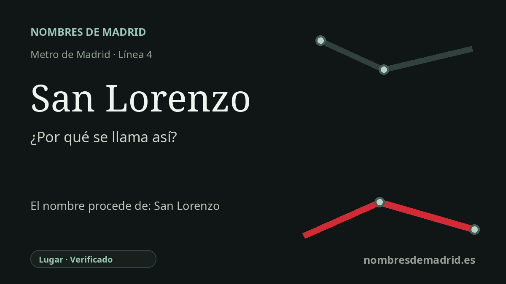

Publicado el · Investigación de Nombres de Madrid · Cómo verificamos cada origen · 7 fuentes consultadas
Respuesta rápida
La estación de San Lorenzo toma su nombre del barrio de San Lorenzo, en Hortaleza, donde se inauguró el 15 de diciembre de 1998. El nombre del barrio es en último término religioso y remite a san Lorenzo de Roma, aunque la fuente directa del nombre es el barrio y no una advocación parroquial documentada.
La historia del nombre
La estación de San Lorenzo toma su nombre del barrio de San Lorenzo, en Hortaleza. La fuente oficial más directa es la página de la Comunidad de Madrid sobre la prolongación de la línea 4 entre Mar de Cristal y Parque de Santa María, que afirma que la estación de San Lorenzo se ubica en el barrio del que toma su nombre, bajo la calle o avenida de la Barranquilla.
Ese nombre de barrio ya formaba parte de la geografía urbana moderna de Hortaleza antes de la llegada del Metro. La guía arquitectónica del COAM recoge la Colonia San Lorenzo, en el distrito de Hortaleza, como una colonia, barrio o polígono fechado en 1967, obra de José Luis Sanz-Magallón y Hurtado de Mendoza, con proyecto y obras entre finales de los años sesenta y comienzos de los setenta. La cartografía actual del Ayuntamiento sitúa San Lorenzo dentro del barrio administrativo de Pinar del Rey, por lo que aquí San Lorenzo debe entenderse como nombre de barrio o colonia local, no como uno de los barrios administrativos oficiales de Madrid.
El nombre de Metro pertenece a la segunda fase de llegada de la línea 4 a esta zona de Hortaleza. La prolongación entre Mar de Cristal y Parque de Santa María se puso en servicio el 15 de diciembre de 1998 e incorporó las estaciones de San Lorenzo y Parque de Santa María. La prensa vecinal, al recordar los 25 años del Metro en Hortaleza, también subraya que las movilizaciones del distrito reclamaron estaciones en San Lorenzo y en otros barrios cercanos tras décadas de mala comunicación en transporte público.
El nombre es, en último término, religioso. San Lorenzo es san Lorenzo de Roma, recordado tradicionalmente como uno de los diáconos del papa Sixto II y como mártir durante la persecución del emperador Valeriano en el año 258. Vatican News recoge la tradición según la cual Lorenzo administraba los bienes destinados a los pobres, presentó a los pobres como el verdadero tesoro de la Iglesia y murió mártir el 10 de agosto. Britannica adopta una formulación más cauta sobre algunos detalles: considera legendaria la muerte en la parrilla y señala que probablemente fue decapitado, un matiz importante para una explicación histórica rigurosa.
La interpretación mejor respaldada es que la estación se llama así directamente por el barrio o Colonia San Lorenzo de Hortaleza, y solo de forma última por san Lorenzo. No consta una fuente autorizada que demuestre que la estación se nombrara por una parroquia local concreta de San Lorenzo; la explicación del barrio o colonia tiene mucho más respaldo.